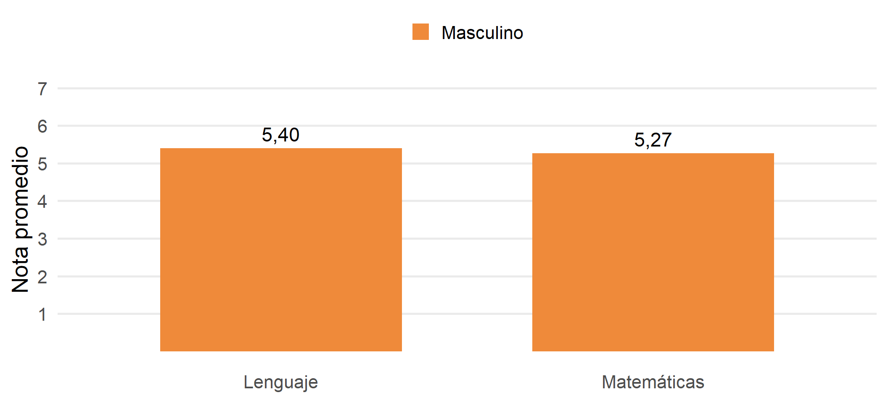

[1] 4Prof. Pablo Pérez Ahumada
Apoyo docente: Javiera Romo Sánchez
Ayudantes: Valentina Montecinos, Martina Buzio, Javiera Álvarez, Millaray Vergara y Tomás González.
Estrategias de Investigación
Cuantitativa
Introducción
a R
Cápsula · RStudio, objetos, librerías, bases de datos, tipos de variables y dplyr
1 · Interfaz de RStudio Consola, script, entorno y proyectos.
2 · Programación básica R como calculadora, objetos y funciones.
3 · Librerías Instalar, cargar y el tidyverse.
4 · Bases de datos rectangulares Variables, valores, observaciones. Importar datos.
5 · Naturaleza de las variables Numéricas, texto, lógicas, factores, haven_labelled, NA.
6 · Transformar datos con dplyr Filtrar, seleccionar, crear variables y resumir por grupos.
Esta cápsula se basa en R para Ciencia de Datos (Wickham y Grolemund), traducción al español: https://es.r4ds.hadley.nz/
Módulo 1
La interfaz de RStudio
Módulo 1 · Interfaz
R es lo que usamos; RStudio es solo la interfaz.
Módulo 1 · Interfaz
1 · Editor (script) Donde escribimos y guardamos el código. Es nuestro cuaderno de trabajo.
3 · Entorno (Environment) Muestra los objetos que hemos creado: bases de datos, vectores, resultados.
2 · Consola Donde R ejecuta el código y muestra los resultados.
4 · Archivos / Gráficos / Paquetes / Ayuda Navegar carpetas, ver gráficos, revisar paquetes instalados y leer la ayuda.
Módulo 1 · Interfaz
Podemos escribir código directamente en la consola y presionar Enter:
> indica que R está listo para recibir una instrucción.+, R está esperando que terminemos la instrucción (falta cerrar un paréntesis o una comilla). Se sale con Esc.[1] indica que el resultado empieza en el primer elemento.Lo que escribimos en la consola no queda guardado. Sirve para probar cosas rápidas, no para trabajar.
Módulo 1 · Interfaz
Un script es un archivo de texto con extensión .R donde escribimos el código para poder guardarlo, corregirlo y volver a ejecutarlo.
Ctrl + Shift + N).Ctrl + Enter (en Mac: Cmd + Enter).Ctrl + Shift + Enter.# es un comentario: R no lo ejecuta.[1] 15El script es la fuente de verdad de nuestro análisis: cualquier persona debería poder abrirlo y obtener los mismos resultados.
Módulo 1 · Interfaz
Módulo 1 · Interfaz
Un proyecto (.Rproj) es una carpeta que reúne todo lo de un análisis. Al abrirlo, R sabe dónde estamos trabajando (el directorio de trabajo).
intro_R/
├── intro_R.Rproj
├── input/ datos originales
├── script/ código
└── output/ resultados.Rproj.Módulo 2
Programación básica
Módulo 2 · Programación básica
Módulo 2 · Programación básica
Guardamos un valor en un objeto con el operador de asignación <-:
Se lee: “nota_mate recibe el valor 5.5”. El objeto aparece en el Entorno. Para ver su contenido, escribimos su nombre:
Atajo: Alt + - escribe <- (en Mac: Option + -).
Módulo 2 · Programación básica
Con la función c() (de combinar) creamos un vector: un conjunto de valores del mismo tipo.
[1] 5.5 6.2 4.8 3.9 6.7[1] 6.0 6.7 5.3 4.4 7.2[1] 5Idea clave para lo que viene: una variable de una base de datos es un vector.
Módulo 2 · Programación básica
Una función recibe uno o más valores (argumentos), hace algo con ellos y devuelve un resultado.
nombre_funcion(argumento1 = valor1, argumento2 = valor2)
Módulo 2 · Programación básica
Los argumentos se pueden dar por nombre o por posición:
[1] 4.87[1] 4.87 [1] 1.0 1.5 2.0 2.5 3.0 3.5 4.0 4.5 5.0 5.5 6.0 6.5 7.0Para saber qué argumentos tiene una función, pedimos ayuda:
Módulo 2 · Programación básica
Error in "5.5" + 1: argumento no-numérico para operador binarioLean el mensaje de error: casi siempre dice qué pasó. Los más comunes son errores de tipeo, paréntesis o comillas sin cerrar y objetos que no se han creado.
Módulo 3
Librerías (paquetes)
Módulo 3 · Librerías
mean(), round(), c()…| Paquete | Para qué sirve |
|---|---|
readxl |
Abrir archivos de Excel |
haven |
Abrir bases de SPSS, Stata y SAS |
dplyr |
Transformar datos |
ggplot2 |
Hacer gráficos |
Módulo 3 · Librerías
Descarga el paquete al computador. El nombre va entre comillas.
Instalar es comprar el libro. Cargar es sacarlo de la estantería.
tidyverseMódulo 3 · Librerías
Una colección de paquetes diseñados para trabajar juntos en ciencia de datos. Es la base de R para Ciencia de Datos.
── Attaching core tidyverse packages ─────────────────── tidyverse 2.0.0 ──
✔ dplyr 1.1.4 ✔ readr 2.1.5
✔ forcats 1.0.0 ✔ stringr 1.5.1
✔ ggplot2 3.5.1 ✔ tibble 3.2.1
✔ lubridate 1.9.3 ✔ tidyr 1.3.1
✔ purrr 1.0.2
── Conflicts ───────────────────────────────────── tidyverse_conflicts() ──
✖ dplyr::filter() masks stats::filter()Los conflictos avisan que dos paquetes tienen funciones con el mismo nombre. No es un error.
pacman: instalar y cargar en un pasoMódulo 3 · Librerías
Cuando usamos varios paquetes, pacman::p_load() instala los que falten y carga todos:
Esta es la forma que usaremos al inicio de cada script del curso.
paquete::funcion()Módulo 3 · Librerías
Con :: podemos usar una función de un paquete sin cargarlo completo, o dejar claro de dónde viene:
¿Cuándo es útil?
Módulo 4
Bases de datos rectangulares
Módulo 4 · Bases de datos
Notas de 98 estudiantes de dos cursos de un colegio (2°A y 2°B). Datos ficticios.
| Variable | Descripción | Valores |
|---|---|---|
id |
Identificador del estudiante | 1 a 98 |
curso |
Curso | 2°A, 2°B |
genero |
Género | Femenino, Masculino |
edad |
Edad en años | 15 a 17 |
nota_matematicas |
Promedio anual en Matemáticas | 1,5 a 7,0 · 888 = No rindió · 999 = Sin información |
nota_lenguaje |
Promedio anual en Lenguaje | 1,5 a 7,0 · 888 = No rindió · 999 = Sin información |
La hoja libro_codigos del Excel tiene esta misma descripción. Siempre hay que revisar el libro de códigos antes de analizar una base.
Módulo 4 · Bases de datos
| id | curso | genero | edad | nota_matematicas | nota_lenguaje |
|---|---|---|---|---|---|
| 1 | 2°A | Masculino | 16 | 6.0 | 5.7 |
| 2 | 2°A | Masculino | 16 | 4.7 | 5.3 |
| 3 | 2°A | Masculino | 16 | 5.1 | 5.2 |
| 4 | 2°A | Masculino | 17 | 6.1 | 5.0 |
| 5 | 2°A | Femenino | 15 | 4.1 | 6.7 |
Variable: una característica que medimos (columna) Observación: la unidad que medimos (fila) Valor: lo que registramos (celda)
Módulo 4 · Bases de datos
Según R para Ciencia de Datos (cap. 12), una base está ordenada cuando cumple tres reglas:
Nuestra base de notas está ordenada: cada fila es un estudiante y cada columna una característica suya. Por eso se le llama base rectangular.
Módulo 4 · Bases de datos
Desordenada: el curso está “escondido” en los nombres de las columnas.
Módulo 4 · Bases de datos
En R, una base rectangular se guarda como un data frame: un conjunto de vectores del mismo largo, uno por columna.
estudiante curso nota_mate
1 Ana 2°A 6.1
2 Benja 2°B 5.4
3 Carla 2°A 4.9Cada columna es un vector (Módulo 2). Todas deben tener la misma cantidad de valores: uno por observación.
Módulo 4 · Bases de datos
El tidyverse usa tibbles (cap. 10): data frames que se imprimen de forma más ordenada.
Módulo 4 · Bases de datos
Rara vez escribimos los datos a mano. Más bien, los importamos desde un archivo. Para Excel usamos read_excel() del paquete readxl:
# A tibble: 98 × 6
id curso genero edad nota_matematicas nota_lenguaje
<dbl> <chr> <chr> <dbl> <dbl> <dbl>
1 1 2°A Masculino 16 6 5.7
2 2 2°A Masculino 16 4.7 5.3
3 3 2°A Masculino 16 5.1 5.2
4 4 2°A Masculino 17 6.1 5
5 5 2°A Femenino 15 4.1 6.7
6 6 2°A Femenino 16 5.1 6.1
7 7 2°A Masculino 15 888 6.7
8 8 2°A Femenino 16 7 6.8
9 9 2°A Femenino 17 4.2 6.3
10 10 2°A Femenino 16 4.4 5.6
# ℹ 88 more rowsLa ruta es relativa al proyecto: input/ es la carpeta y notas_colegio.xlsx el archivo. read_excel() lee la primera hoja; con sheet = "libro_codigos" podemos leer otra.
Módulo 4 · Bases de datos
Rows: 98
Columns: 6
$ id <dbl> 1, 2, 3, 4, 5, 6, 7, 8, 9, 10, 11, 12, 13, 14, 15, 16…
$ curso <chr> "2°A", "2°A", "2°A", "2°A", "2°A", "2°A", "2°A", "2°A…
$ genero <chr> "Masculino", "Masculino", "Masculino", "Masculino", "…
$ edad <dbl> 16, 16, 16, 17, 15, 16, 15, 16, 17, 16, 15, 16, 16, 1…
$ nota_matematicas <dbl> 6.0, 4.7, 5.1, 6.1, 4.1, 5.1, 888.0, 7.0, 4.2, 4.4, 4…
$ nota_lenguaje <dbl> 5.7, 5.3, 5.2, 5.0, 6.7, 6.1, 6.7, 6.8, 6.3, 5.6, 6.6…$Módulo 4 · Bases de datos
Con base$variable extraemos una columna. El resultado es un vector:
[1] 16 16 16 17 15 16 15 16 17 16 15 16 16 15 16 16 16 15 15 16 17 16 16 16 17
[26] 16 15 16 16 16 17 15 16 16 16 16 16 16 16 17 17 16 15 16 16 15 16 16 15 15
[51] 17 16 16 16 16 16 16 16 16 16 16 16 16 16 16 16 16 16 17 15 15 17 16 17 16
[76] 16 17 17 15 16 17 16 15 17 16 16 15 16 16 16 16 16 16 15 15 15 16 17[1] 15.95918
2°A 2°B
49 49 table() cuenta cuántas veces aparece cada valor: hay 49 estudiantes en cada curso.
Módulo 4 · Bases de datos
| Formato | Extensión | Función | Paquete |
|---|---|---|---|
| Excel | .xlsx, .xls |
read_excel() |
readxl |
| Texto separado por comas | .csv |
read_csv() |
readr (tidyverse) |
| SPSS | .sav |
read_sav() |
haven |
| Stata | .dta |
read_dta() |
haven |
| R | .rds |
readRDS() |
R base |
Módulo 5
Naturaleza de las variables
Módulo 5 · Variables
| Tipo | En el tibble | Ejemplo | Uso típico |
|---|---|---|---|
| Numérico (double) | <dbl> |
5.5, 16 |
Notas, edad, ingresos |
| Entero (integer) | <int> |
16L |
Conteos |
| Texto (character) | <chr> |
"Femenino" |
Nombres, respuestas abiertas |
| Lógico (logical) | <lgl> |
TRUE, FALSE |
Resultados de comparaciones |
| Factor | <fct> |
Femenino (nivel 1) |
Variables categóricas |
| Etiquetado | <dbl+lbl> |
888 [No rindió] |
Bases de SPSS / Stata |
Módulo 5 · Variables
Con ellas podemos hacer operaciones matemáticas: sumar, promediar, calcular desviaciones.
Cuidado: que una variable esté guardada como número no significa que sea cuantitativa. Si genero estuviera codificada como 1 = Femenino y 2 = Masculino, su “promedio” (por ejemplo, 1,5) no tendría ningún sentido. Siempre hay que revisar el libro de códigos.
Módulo 5 · Variables
Guardan texto, siempre entre comillas. No se pueden promediar, pero sí contar:
[1] "Masculino" "Masculino" "Masculino" "Masculino" "Femenino" "Femenino"
Femenino Masculino
49 49 Para R, "Femenino", "femenino" y "FEMENINO" son tres valores distintos. Esto es frecuente en respuestas abiertas o bases mal digitadas.
Módulo 5 · Variables
Solo toman los valores TRUE (verdadero) o FALSE (falso). Aparecen cuando hacemos comparaciones:
| Operador | Significa |
|---|---|
== |
igual a |
!= |
distinto de |
>, >= |
mayor (o igual) |
<, <= |
menor (o igual) |
Se usan muchísimo para filtrar casos (módulo 6). Además, TRUE vale 1 y FALSE vale 0, por lo que mean() de un vector lógico da una proporción.
Módulo 5 · Variables
Un factor es una variable categórica con un conjunto fijo de niveles (levels) (cap. 15).
Los factores permiten definir un orden que no sea el alfabético, útil para variables ordinales:
NAMódulo 5 · Variables
En R, un dato faltante se representa con NA (Not Available). Es “contagioso”: cualquier operación con un NA da NA.
[1] NA[1] 5.466667[1] FALSE TRUE FALSE FALSEUn NA no es un cero: significa “no sabemos” cuál es el valor.
Módulo 5 · Variables
En nuestra base, los datos perdidos no están como NA, sino como 888 (No rindió) y 999 (Sin información). ¿Qué pasa si calculamos el promedio directamente?
Un promedio de 33 en una escala del 1 al 7. Esto pasa porque para R, 888 y 999 son números como cualquier otro. Antes de analizar, hay que recodificarlos a NA (lo haremos en el módulo 6).
haven_labelledMódulo 5 · Variables
Las bases de SPSS y Stata guardan etiquetas: un texto asociado a cada código. Al importarlas con haven, R las lee como haven_labelled.
<labelled<double>[5]>
[1] 5.5 6.1 888.0 4.2 999.0
Labels:
value label
888 No rindió
999 Sin informaciónEs lo que veríamos si nuestra base de notas viniera en formato .sav. En la CASEN aparecen así casi todas las variables.
Módulo 5 · Variables
Ver sus etiquetas
Quitar las etiquetas (queda el número)
Regla práctica: zap_labels() para variables que vamos a promediar; as_factor() para variables categóricas que vamos a contar o comparar.
Módulo 5 · Variables
Las funciones as.*() transforman un tipo en otro:
[1] 5.5[1] "16"[1] 6.1 NACuidado con as.numeric() sobre un factor: devuelve el número del nivel, no el valor original.
Módulo 6
Transformar datos con dplyr
dplyrMódulo 6 · dplyr
dplyr (parte del tidyverse) ofrece verbos para transformar datos (cap. 5). Todos funcionan igual:
$.| Verbo | Qué hace |
|---|---|
filter() |
Elige filas según una condición |
arrange() |
Ordena las filas |
select() |
Elige columnas |
rename() |
Cambia nombres de columnas |
mutate() |
Crea o modifica variables |
group_by() + summarise() |
Resume por grupos |
%>%Módulo 6 · dplyr
El pipe toma lo que está a su izquierda y lo pasa como primer argumento de la función de la derecha. Se lee “y luego”.
Atajo: Ctrl + Shift + M escribe %>%. También existe el pipe nativo de R, |>, que funciona igual en casi todos los casos.
filter(): elegir filasMódulo 6 · dplyr
# A tibble: 49 × 6
id curso genero edad nota_matematicas nota_lenguaje
<dbl> <chr> <chr> <dbl> <dbl> <dbl>
1 1 2°A Masculino 16 6 5.7
2 2 2°A Masculino 16 4.7 5.3
3 3 2°A Masculino 16 5.1 5.2
4 4 2°A Masculino 17 6.1 5
5 5 2°A Femenino 15 4.1 6.7
6 6 2°A Femenino 16 5.1 6.1
7 7 2°A Masculino 15 888 6.7
8 8 2°A Femenino 16 7 6.8
9 9 2°A Femenino 17 4.2 6.3
10 10 2°A Femenino 16 4.4 5.6
# ℹ 39 more rowsfilter() con varias condicionesMódulo 6 · dplyr
Y (& o coma): se cumplen ambas
O (|): se cumple al menos una
arrange(): ordenar filasMódulo 6 · dplyr
De menor a mayor
select(): elegir columnasMódulo 6 · dplyr
Por nombre
# A tibble: 3 × 3
id genero nota_lenguaje
<dbl> <chr> <dbl>
1 1 Masculino 5.7
2 2 Masculino 5.3
3 3 Masculino 5.2Con funciones de ayuda
rename(): cambiar nombresMódulo 6 · dplyr
La sintaxis es nombre_nuevo = nombre_viejo:
# A tibble: 3 × 6
id curso genero edad mate leng
<dbl> <chr> <chr> <dbl> <dbl> <dbl>
1 1 2°A Masculino 16 6 5.7
2 2 2°A Masculino 16 4.7 5.3
3 3 2°A Masculino 16 5.1 5.2Nombres cortos y sin espacios ni tildes facilitan el trabajo. Ojo: si no guardamos el resultado con <-, la base original no cambia.
mutate(): recodificar 888 y 999 a NAMódulo 6 · dplyr
mutate() crea o modifica variables. Con if_else() reemplazamos los códigos por NA:
Min. 1st Qu. Median Mean 3rd Qu. Max. NA's
3.300 4.700 5.100 5.225 5.800 7.000 3 if_else(condición, valor si es verdadero, valor si es falso). Ahora el máximo es 7 y aparecen los NA's.
Esta vez sí guardamos el resultado con notas <-: la base queda corregida para lo que sigue.
mutate(): crear variables nuevasMódulo 6 · dplyr
# A tibble: 5 × 6
id genero nota_matematicas nota_lenguaje promedio aprueba_mate
<dbl> <fct> <dbl> <dbl> <dbl> <chr>
1 1 Masculino 6 5.7 5.85 Aprueba
2 2 Masculino 4.7 5.3 5 Aprueba
3 3 Masculino 5.1 5.2 5.15 Aprueba
4 4 Masculino 6.1 5 5.55 Aprueba
5 5 Femenino 4.1 6.7 5.4 Aprueba mutate() con case_when()Módulo 6 · dplyr
Para recodificar en más de dos categorías, usamos case_when(): cada línea es condición ~ valor.
notas <- notas %>%
mutate(tramo_lenguaje = case_when(nota_lenguaje < 4 ~ "Insuficiente",
nota_lenguaje < 5.5 ~ "Suficiente",
nota_lenguaje >= 5.5 ~ "Destacado",
TRUE ~ NA_character_)) # Dependiendo de la naturaleza de la variable ponemos NA_real_, NA_complex_, NA_integer_
table(notas$tramo_lenguaje, useNA = "ifany")
Destacado Insuficiente Suficiente <NA>
46 6 43 3 Las condiciones se evalúan en orden: un 4,8 no cumple la primera, sí la segunda, y ahí se queda. Los NA siguen siendo NA.
summarise(): resumirMódulo 6 · dplyr
summarise() reduce toda la base a una fila con los estadísticos que pidamos:
# A tibble: 1 × 4
n media_mate media_leng de_leng
<int> <dbl> <dbl> <dbl>
1 98 5.23 5.35 0.900Ahora que recodificamos los 888 y 999, los promedios sí tienen sentido. Y no olvidar na.rm = TRUE.
group_by() + summarise(): resumir por gruposMódulo 6 · dplyr
La combinación más poderosa de dplyr: calcular estadísticos para cada grupo.
# A tibble: 2 × 4
genero n media_mate media_leng
<fct> <int> <dbl> <dbl>
1 Femenino 49 4.87 5.66
2 Masculino 49 5.59 5.03¿Qué observan?
Módulo 6 · dplyr
# A tibble: 4 × 4
curso genero media_mate media_leng
<chr> <fct> <dbl> <dbl>
1 2°A Femenino 4.9 5.73
2 2°A Masculino 5.4 5.03
3 2°B Femenino 4.83 5.58
4 2°B Masculino 5.78 5.03En ambos cursos los hombres tienen mejores notas en Matemáticas y las mujeres en Lenguaje. ¿Cómo podríamos explicar sociológicamente estas brechas?
count(): contar casosMódulo 6 · dplyr
count() es un atajo para group_by() + summarise(n = n()):
# A tibble: 6 × 3
genero aprueba_mate n
<fct> <chr> <int>
1 Femenino Aprueba 45
2 Femenino Reprueba 3
3 Femenino <NA> 1
4 Masculino Aprueba 46
5 Masculino Reprueba 1
6 Masculino <NA> 2Módulo 6 · dplyr
¿Las brechas de género en las notas son iguales en ambos cursos?
brechas <- notas %>%
filter(!is.na(nota_matematicas), !is.na(nota_lenguaje)) %>% # solo casos válidos
group_by(curso, genero) %>% # por curso y género
summarise(n = n(),
mate = mean(nota_matematicas),
leng = mean(nota_lenguaje),
.groups = "drop") %>%
mutate(diferencia = round(mate - leng, 2)) %>% # mate - lenguaje
arrange(curso, desc(diferencia))
brechas# A tibble: 4 × 6
curso genero n mate leng diferencia
<chr> <fct> <int> <dbl> <dbl> <dbl>
1 2°A Masculino 21 5.32 4.95 0.37
2 2°A Femenino 25 4.90 5.73 -0.83
3 2°B Masculino 23 5.80 5.02 0.79
4 2°B Femenino 23 4.83 5.57 -0.74Módulo 6 · dplyr

output/Módulo 6 · dplyr
Los resultados se guardan en la carpeta output/, nunca sobre los datos originales de input/:
Así, la carpeta input/ siempre conserva los datos tal como los recibimos, y cualquier persona puede reproducir el análisis corriendo el script desde el principio.
Cierre
| Módulo | Lo central |
|---|---|
| 1 · RStudio | Trabajar siempre en un script, dentro de un proyecto |
| 2 · Programación | objeto <- valor; funcion(argumentos); c() crea vectores |
| 3 · Librerías | install.packages() una vez; library() o p_load() cada sesión |
| 4 · Bases de datos | Fila = observación, columna = variable, celda = valor |
| 5 · Variables | Revisar el tipo; NA, códigos perdidos y etiquetas |
6 · dplyr |
filter, select, mutate, group_by + summarise, unidos con %>% |
dplyrhaven: https://haven.tidyverse.org/dplyr (cheatsheet): Help → Cheat Sheets en RStudioEstrategias de Investigación Cuantitativa 2026 · Cápsula: Introducción a R